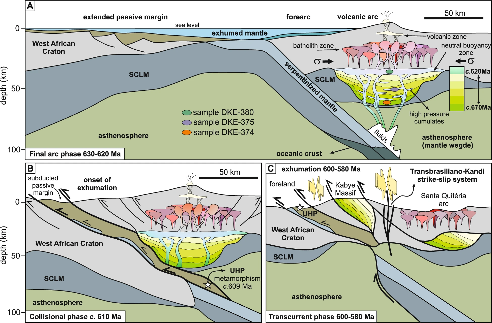

Magmatic flare-up causes crustal thickening at the transition from subduction to continental collision

Resumo em Português
Acima das zonas de subducção, a taxa de produção de magma e a geração crustal podem aumentar em uma ordem de magnitude durante intervalos de tempo estreitos conhecidos como flare-ups magmáticos. No entanto, as consequências desses eventos no ambiente profundo do arco permanecem pouco compreendidas. Neste trabalho, utilizamos técnicas petrológicas e de datação in situ em zircão para investigar a raiz de um arco continental dentro do Orógeno colisional do Gondwana Ocidental, atualmente exposta no Maciço de Kabyé, no Togo.Demonstramos que gabros intrudidos há 670 Ma a 20–25 km de profundidade foram transformados em eclogitos por volta de 620 Ma a 65–70 km de profundidade. Isso foi coevo a extenso magmatismo a 20–40 km de profundidade, indicativo de um evento de flare-up que atingiu seu pico pouco antes da subducção da margem continental. Propõe-se que o aumento do fluxo de H₂O proveniente da subducção do manto serpentinizado na margem hiper-extendida do continente em aproximação foi responsável pelo aumento da produtividade magmática e pelo espessamento crustal. Esses resultados lançam nova luz sobre os processos de geração crustal em arcos continentais durante eventos colisionais de grande escala.